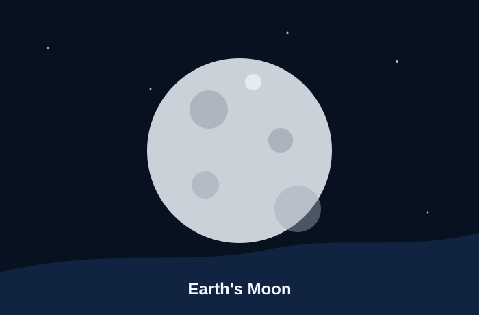

A natural record keeper
Earth's Moon is covered with craters, old lava plains, and bright highland areas. Because it has no thick atmosphere and no oceans, many surface marks can remain visible for very long periods of time. That makes the Moon useful for learning about impacts and ancient volcanic activity. NASA Moon Facts
The Moon also affects Earth in everyday ways. Its gravity helps create ocean tides, and its changing phases make it one of the easiest objects to observe in the night sky. A student can study the Moon with only their eyes, but telescopes reveal more details such as crater rims and darker mare regions.
Quick facts
- Type: rocky natural satellite
- Important surface feature: many impact craters
- Why it matters: preserves clues about early solar system events
- Easy observation: visible without a telescope